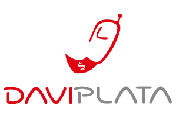
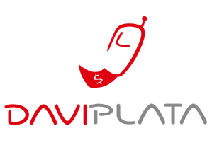

Entrega
consultar
Entrega
consultar
Entrega
consultar
Entrega
consultar
Ingreso Solidario
Debido a la situacion generada por el COVID-19,
El gobierno nacional aportara a las familias mas afectadas
y que no pertenezcan a ningun programa social
un subsidio por $160.000
¿Qué es el Ingreso Solidario?
Es un esquema mediante el cual se entrega una
transferencia monetaria en favor de los hogares
en situación de pobreza y vulnerabilidad que
no sean beneficiarios de programas sociales del estado.
Los hogares en condición de pobreza
y vulnerabilidad, afectados en sus
ingresos como consecuencia de la pandemia del coronavirus,
que no hagan parte de los programas sociales
"Familias en Acción", "Colombia Mayor",
"Jóvenes en Acción" y "Devolución del IVA"
podrán acceder a esta medida social.

Etapas De Entrega
 

Estamos actualizando el listado de beneficiarios que recibieron el giro.
Si encontró su nombre en la primera etapa y está plenamente
identificado, no ha perdido su beneficio.
Estamos actualizando el listado de beneficiarios que recibieron el giro.
Si encontró su nombre en la primera etapa y está plenamente
identificado, no ha perdido su beneficio.

Si usted fue informado de que es beneficiario del programa mediante un mensaje de texto
enviado por la entidad financiera en la cual tiene una cuenta o depósito activo,
comuníquese con esa entidad financiera para averiguar acerca de los recursos del Ingreso Solidario.
Si usted no tiene una cuenta o depósito con el sistema financiero, y es elegido
dentro del programa Ingreso Solidario, pronto recibira un mensaje con
las instrucciones para hacer la apertura de una cuenta digital.
Si usted encontró su nombre y cédula en la base de beneficiarios y no ha recibido una segunda instrucción, espere hasta que haga parte
de un ciclo posterior de pagos. Durante esta etapa, las entidades financieras se contactarán con usted
para darle las indicaciones de cómo recibir el giro o hacer la apertura de un depósito simplificado a través de su celular.
Prosperidad Social está trabajando con diferentes organizaciones y
fuentes de datos para ubicarlo y contactarlo.
Lo invitamos a consultar periódicamente la página.
Por favor no dudes en contactarnos para poder darte la informacion que necesitas